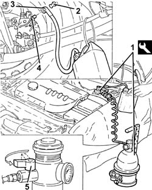
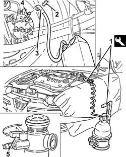
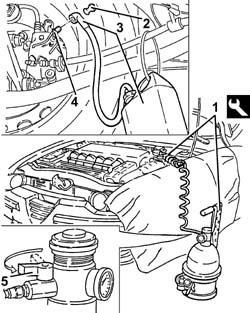

0010T65 hydraulic brake system bleed air
- Path
- Procedures > 00 MAINTENANCE > 0010 NEW UNITS AND PLANNED MAINTENANCE'. > 0010T vehicle oil and fluids > 0010T65 hydraulic brake system bleed air
- Kind
- repair procedure (removal / refitting; the operation number is the code)
- Applies to
- all engines; all production periods
- Interactive page
- https://sloeber94.github.io/elrnDB-a147/en/#/3024730
Applies to: engines: 1.6 TS, 2.0 TS; all production periods
Applies to: engines: 1.9 JTD 8V; all production periods
Position the vehicle on the ramp.
1. Connect the tool to the brake-clutch fluid reservoir.
 | Name | Country |
|---|---|---|
1 | Brake/clutch bleeding equipment | 1.806.097.001 |
2. Remove the protective cap on the brake caliper bleed valve.
3. Connect the collection system (pipe and reservoir) to the bleed valve on the brake caliper.
4. Open the bleed valve on the brake caliper.
5. Slowly open the fluid reservoir tap.
Wait until all the air contained in the hydraulic system has emerged.
Close the bleed valve on the brake caliper and fit the protective cap.
Repeat the above operations for the other brake calipers.

Applies to: engines: 1.9 JTD 8V; all production periods
Remove the collection system (pipe and reservoir).
Remove the equipment.
| Name | Country |
|---|---|---|
- | Brake/clutch bleeding equipment | 1.806.097.001 |
Remove the car from the ramps.
Applies to: engines: 1.9 JTD 16V; all production periods
Position the vehicle on the ramp.
Proceed with removal 7025A12 Engine front sound insulation COVER - R.R. .
Proceed with removal 7025A14 Bonnet LID - R.R. .
Proceed with removal 1016A10 sound-proofing cover - r + r .
1. Connect the tool to the brake-clutch fluid reservoir.
| Name | Country |
|---|---|---|
1 | Brake/clutch bleeding equipment | 1.806.097.001 |
2. Remove the protective cap on the brake caliper bleed valve.
3. Connect the collection system (pipe and reservoir) to the bleed valve on the brake caliper.
4. Open the bleed valve on the brake caliper.
5. Slowly open the fluid reservoir tap.
Wait until all the air contained in the hydraulic system has emerged.
Close the bleed valve on the brake caliper and fit the protective cap.
Repeat the above operations for the other brake calipers.

Applies to: engines: 1.9 JTD 16V; all production periods
Remove the collection system (pipe and reservoir).
Remove the equipment.
| Name | Country |
|---|---|---|
- | Brake/clutch bleeding equipment | 1.806.097.001 |
Proceed with refitting 1016A10 sound-proofing cover - r + r .
Proceed with refitting 7025A14 Bonnet LID - R.R. .
Proceed with refitting 7025A12 Engine front sound insulation COVER - R.R. .
Remove the car from the ramps.
Applies to: engines: 3.2 V6; all production periods
Position the vehicle on the ramp.
1. Connect the tool to the brake-clutch fluid reservoir.
| Name | Country |
|---|---|---|
1 | Brake/clutch bleeding equipment | 1.806.097.001 |
2. Remove the protective cap on the brake caliper bleed valve.
3. Connect the collection system (pipe and reservoir) to the bleed valve on the brake caliper.
4. Open the bleed valve on the brake caliper.
5. Slowly open the fluid reservoir tap.
Wait until all the air contained in the hydraulic system has emerged.
Close the bleed valve on the brake caliper and fit the protective cap.
Repeat the above operations for the other brake calipers.

Applies to: engines: 3.2 V6; all production periods
Remove the collection system (pipe and reservoir).
Remove the equipment.
| Name | Country |
|---|---|---|
- | Brake/clutch bleeding equipment | 1.806.097.001 |
Remove the car from the ramps.
Topics linked from this page (4)
- 1016A10 sound-proofing cover - r + r
- 3330A14 HYDRAULIC BRAKING SYSTEM - Bleed air
- 7025A12 Engine front sound insulation COVER - R.R.
- 7025A14 Bonnet LID - R.R.
Topics that link to this page (19)
- 1820B30 OPERATING CYLINDER/CLUTCH HYDRAULIC ACTUATOR - R.R.
- 1820B40 FLEXIBLE PIPE from clutch reservoir to (pump) - master cylinder R.R.
- 1820B54 hose from damper - r r
- 1820B58 clutch hydraulic circuit vibration damper - r+r
- 3310A14 FRONT DISC BRAKES - R.R.
- 3310A30 FRONT BRAKE CALIPER (one) - R.R.
- 3310A48 front brake disc - r r
- 3310A57 front brake calliper bracket - r r
- 3310A59 front brake disc guard - r r
- 3330C30 brake fluid reservoir - r + r and wash inside
- 3330D02 brake servo/brake pump assembly - r r
- 3330E10 FLEXIBLE PIPE (one), left or right, to front brake calipers - R.R .
- 3340A12 A'B.S. system. - electronic and hydraulic CONTROL UNIT R.R.
- 3340A13 abs central mount - r r
- 3340B55 central brake pipe to lh - r r
- 3340B56 RIGID PIPE from hydraulic CONTROL UNIT to RIGHT FRONT BRAKE - R.R.
- 3340B62 rear connection central pipe - r r
- 3340B67 rh brake connection pipe - r r
- 3350A30 asr to control unit - r r